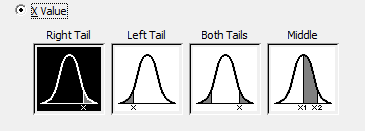

Introduction
Today we will learn to test whether variables are normally distributed, and if they are how to calculate probabilities from a normal distribution to answer questions about our data.
Open the data file
We will return to the data on body dimensions we used in Activity 2. Download the file, and open it in MINITAB.
If you recall, the data are measures of biacromial diameter (i.e. distances from one shoulder to the other), age, sex, and body mass index (BMI) for 507 people. If we want to use the normal distribution to calculate probabilities for the numeric variables we first need to make sure that the normal distribution is a good fit.
Test for normality
1. To start, let's see what the shapes of the distributions look like using a histogram.
- Start to make a histogram (you know how to do this - select the histogram option from the "Graph" menu), using the "Simple" option.
- Enter all three of the numeric variables into the "Graph variables", then click "Multiple Graphs..."
- In the "Multiple Variables" tab, select "In separate panels of the same graph". This will put all three histograms in a single window.
- Click "OK", and then "OK" again to make the histogram
You'll see that none of the variables looks very normal, but biacromial is showing some signs of being bimodal. This can happen when you are mixing together two different groups with different means. Individually they may be normally distributed, but the two different means form different modes when you combine them. To check for this, do your histogram again, but in the "Multiple Graphs" window, switch to the "By Variables" tab and enter "Sex" as "By variables with groups in separate graphs", like this. When you click "OK" to make the graph this option will split the male and female data, and produce a different set of three histograms for each sex. Biacromial looks more bell shaped when you do this, and BMI for males looks better as well.
{kind=link}
Based on these histograms, we wouldn't expect the data to be normally distributed if we lumped men and women together, but at least biacromial might be if we separate them.
Copy and paste the male and female histograms to Word.
Now we can try a formal test of normality, which is reported as part of MINITAB's normal probability plot.
2. In MINITAB, we can both get a very good graphical method of checking for normality and a quantitative test for normality at the same time.
- Select "Graph" → "Probability plot" from the menu bar.
- Select "Single" as the probability plot type.
- In the box that pops up, put all three numeric variables into the "Graph variables" box.
- Click on "Multiple graphs", and in the "Multiple Variables" tab select "In separate panels of the same graph".
- Switch to the "By Variables" tab, and add "Sex" to the "By variables with groups on separate graphs" box (the lower one). Click "OK". You should end up with two sets of probability plots, one for each sex.
- Copy and paste the graphs to a Word file.
{kind=link}
3. To check whether the variables are normal, check the P-Value for each of the three variables (in the legend on the right side of each graph). The rule is:
- If the p-values are greater than 0.05, you "pass" the AD test, and you can treat your data as normally distributed.
- If the p-value is less than 0.05, you "fail" the AD test, and you shouldn't consider the data to be normally distributed.
AD values are measures of "goodness of fit", and the poorer the fit of our data to the normal distribution the larger it will be. The p-value is the probability that a random sample of data from a normal distribution could have an AD value as big as ours. If the probability is large (i.e. p-value greater than 0.05), that means the data had a good chance of coming from a normal distribution, and we'll consider the data to be normal. If the probability is small (i.e. p-values less than 0.05) then we'll conclude the data probably didn't come from a normal distribution.
If you test for normality and you get a p-value less than 0.05 from the AD test, it means that you "failed" the AD test, and you shouldn't consider the data normal. This doesn't mean there is anything wrong with your data, it just means you shouldn't use the normal distribution as a way of trying to understand your data's distribution, because it's not a good model for your data.
You can also look at the graphs, and as long as the red dots all fall within the two outer curved lines, you'll pass the AD test, and your data are close enough to normally distributed to treat them as normal data.
Normal probabilities
Since biacromial diameter is the only variable that passed the AD test, we should only use the normal distribution as a model for biacromial diameter.
In humans, men are larger than women on average. Usually, when you compare the sizes of men and women for nearly any dimension, you find the sexes differ in average size, but that they overlap. We can think of probabilities as being numbers of times an event will occur out of a total number of trials, which means it's natural to think of probabilities as being equivalent to proportions. The probability that a woman has a wider biacromial diameter than the average man is thus also an estimate of the proportion of women that have broader shoulders than the average man.
MINITAB has a nice graphical platform for calculating these probabilities which helps you visualize what you are calculating. Before we can use it, though, we need to calculate the average and standard deviation of biacromial diameter for men and women. Recall that a normal curve is defined by a mean and a standard deviation, so once we have estimates for these parameters we'll have everything we need to calculate normal probabilities.
1. Use the "Display descriptive statistics" command to calculate the mean and standard deviation of biacromial diameter for men and women in the data set. Record these on your assignment sheet.
Now that you have the necessary parameter estimates, we are going to ask, what proportion of women have bigger biacromial diameters than the average man?
2. First, let's graph the male and female distributions together so we can more easily see what we are calculating in the next steps.
- Select "Graph" → "Probability distribution plot".
- The type of plot to use for this graph is "Two Distributions".
- In the window that pops up, set both distributions to "Normal", and use the female mean and standard deviation of biacromial diameter for one, and the male mean and standard deviation for the other.
- Once you have the graph, right-click on it and select "Add" → "Reference Lines". In the form that pops up, add the male and female means (separated by a space) to the "Show reference lines at X values:" box. The graph will look like this when you're done. Copy and paste this graph to your Word file.
{kind=link}
{kind=link}
3. Now we are going to calculate the probability that a woman will have a biacromial diameter greater than the men's mean. If you look at your graph, men have bigger biacromial diameters on average than women, so we are interested in a "right tail" probability for women - we want to know the area under the women's curve, starting at the men's mean and extending to positive infinity. This is also called an "upper tail" probability.
To get this probability, we will use a probability distribution plot, but with a couple of different options:
- Select a probability distribution plot again, but this time select the "View Probability" type from the set of possible plot types.
- In the form that pops up, the "Distribution" tab allows you to specify the mean and standard deviation for the curve you will be using. We are calculating probabilities for the female data, so input the female mean and standard deviations here (make sure it's set to "Normal" distribution as well).
- Then, switch to the "Shaded Area" tab and check the "X Value" option
for "Define Shaded Area By", which you should change to X Value.
Select the right tail as the shaded region option, like this:

- In the "X value" box, enter the male mean - this defines the value above which you will be calculating the probability.
- Click OK.
The graph that pops up will show the same female curve as in your first plot, but now the portion of the female curve above the male mean will be shaded in red (the male curve won't be shown, as we only used male mean to specify the x-value). The probability is given above the shaded area. Copy and paste this graph to your Word file.
4. Now, repeat this procedure, but modify it as needed to calculate the proportion of men that have smaller biacromial diameters than the female mean.
5. Try calculating the proportion of women that have biacromial diameters within 1.5 s of the female mean. Select the correct shaded area, and specify the X Value for 1.5 s below and 1.5 s above the mean (you will need to calculate these values).
That's it! Answer the questions on your assignment sheet.
Challenge questions:
Normal probabilities: In a study of the prevalence of the human papillomavirus (HPV), doctors swabbed the skin of 100 patients, and measured the amount of HPV present in each sample. The data are here.
1. Are these data normally distributed? What tools did you use to determine this?
2. What is the mean and standard deviation of viral load?
3. What's the probability of having less than or equal to 0 viral load in a sample?
4. Is it possible to have a negative viral load? What does this tell you about whether your data really can be perfectly normally distributed?
5. Within what range of viral loads would 95% of the people fall?
6. Calculate a 95% confidence interval. How does it compare in size to the range you calculated in 5? What is different about a 95% CI and the range of viral loads that contains 95% of people?